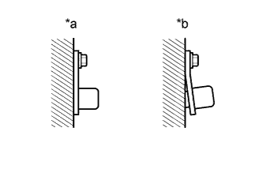
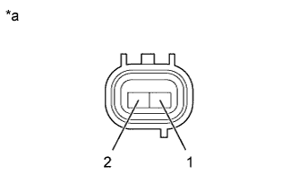
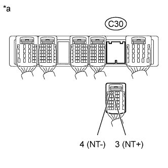

DTC P0717 Turbine Speed Sensor Circuit No Signal |
| DTC Code | DTC Detection Condition | Trouble Area |
| P0717 | All conditions are met for 5 seconds or more (1-trip detection logic): (a) Gear change is not performed. (b) Transmission input shaft speed is 300 rpm or less. (c) Transmission output shaft speed is 1000 rpm or more. (d) Park/neutral position switch R input signal is OFF. (e) Shift solenoid valves and the park/neutral position switch are operating normally. |
|
| Terminal No. (Symbol) | Tool Setting | Condition | Specified Condition |
| C30-3 (NT+) - C30-4 (NT-) | 1 V/DIV., 2 msec./DIV. | Engine is idling (Shift lever in P or N) | Refer to illustration |
| DATA LIST |
Warm up the engine.
Turn the engine switch off.
Connect the intelligent tester to the DLC3.
Turn the engine switch on (IG).
Turn the intelligent tester on.
Enter the following menus: Powertrain / Engine and ECT / Data List.
According to the display on the tester, read the Data List.
| Tester Display | Measurement Item/Range | Normal Condition | Diagnostic Note |
| SPD (NT) | Input shaft speed/ Min.: 0 rpm Max.: 12750 rpm |
| Data is displayed in increments of 50 rpm. |
| 1.INSPECT SPEED SENSOR NT INSTALLATION |
|  |
Check the speed sensor NT installation.
| *a | CORRECT |
| *b | INCORRECT |
|
| ||||
| OK | |
| 2.INSPECT SPEED SENSOR NT |
|  |
Disconnect the C26 speed sensor connector.
Measure the resistance according to the value(s) in the table below.
| Tester Connection | Condition | Specified Condition |
| 1 - 2 | 20°C (68°F) | 560 to 680 Ω |
| *a | Component without harness connected (Speed Sensor NT) |
|
| ||||
| OK | |
| 3.CHECK HARNESS AND CONNECTOR (SPEED SENSOR NT - ECM) |
|  |
Disconnect the C30 ECM connector.
Measure the resistance according to the value(s) in the table below.
| Tester Connection | Condition | Specified Condition |
| C30-3 (NT+) - C30-4 (NT-) | 20°C (68°F) | 560 to 680 Ω |
| C30-3 (NT+) - Body ground | Always | 10 kΩ or higher |
| C30-4 (NT-) - Body ground | Always | 10 kΩ or higher |
| *a | Front view of wire harness connector (to ECM) |
|
| ||||
| OK | ||
| ||